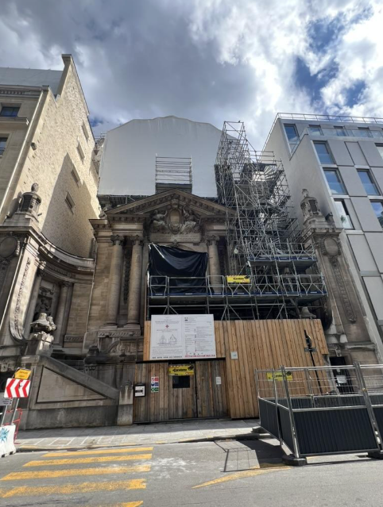
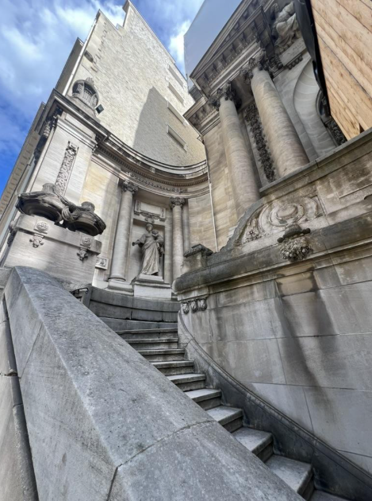
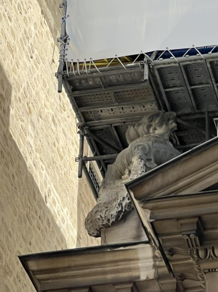
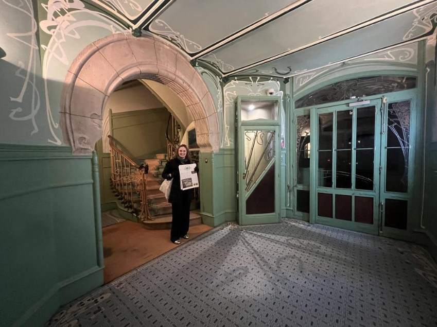
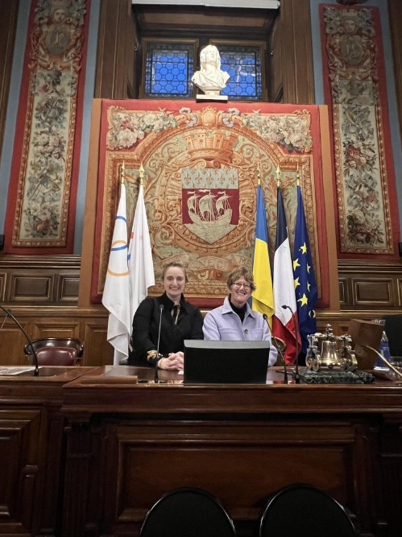
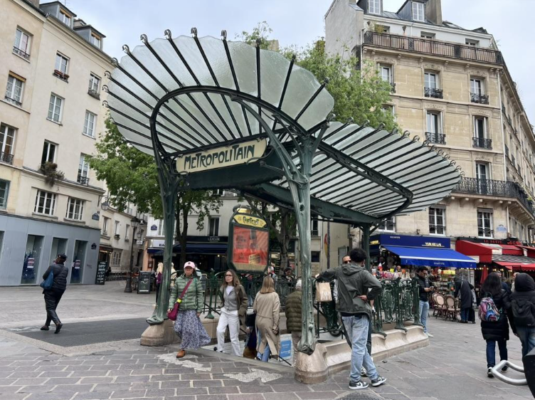
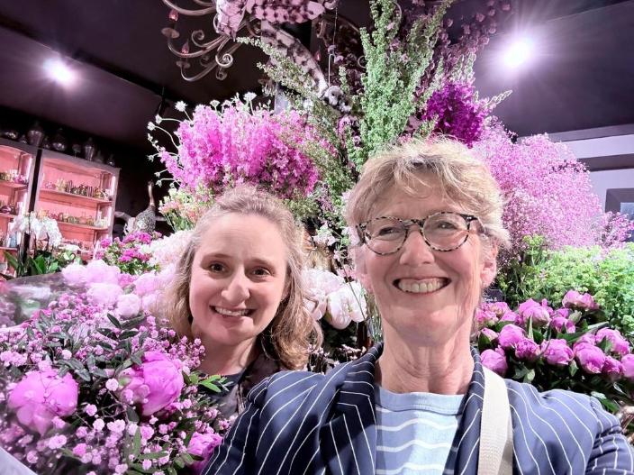
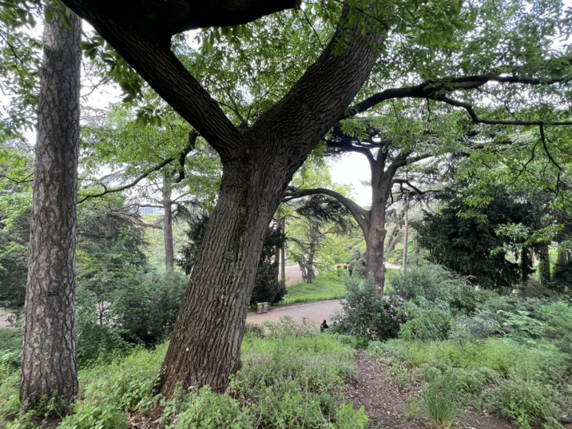

Elizabeth Cummings was born and raised in the Lincoln Park neighborhood of Chicago, but she’s an intrepid traveler who has taken buses across China, visited holy sites in India, climbed Mount Kilimanjaro, surfed in Sri Lanka, and taught English for a year on Réunion Island, France. Professionally, Elizabeth has worked as a researcher, curator, and public engagement expert for some of Chicago’s most iconic cultural institutions, such as the Newberry Library and the Richard H. Driehaus Museum. Today she’s living and working in Paris, a dream assignment for Elizabeth who is fluent in French, has an extensive knowledge of art and French history, and is involved with the Paris Committee of Chicago Sister Cities (a.k.a., Comité Paris-Chicago). In this interview we discuss what brought her to the City of Light and how her experience in Chicago’s cultural and museum sectors has paved the way for life as an American in Paris.

Rob Murphy: Tell me about your early years being born and raised in Lincoln Park, Chicago. When did you first feel drawn to France and begin studying the art history and language of the country?
Elizabeth Cummings: I grew up on North Fremont Street in Lincoln Park, not far from where you raised your children, right, Rob?
Rob Murphy: Right! Just a few blocks away at the corner of Cleveland and Webster Streets. We were only the fourth owners of a house that was built in 1869 that survived the great Chicago fire of 1871. We moved there primarily so my daughters could walk to Francis Parker School which they attended for 14 years.
Elizabeth Cummings: First my family lived in an apartment building in the 800 block of West Webster, and then in 1989 we moved around the corner to the historic Edward Burling-designed row houses on Fremont. My mom Kathy Cummings was an architectural historian and expert on the Prairie School architect George W. Maher. From a very early age, our family trips included pilgrimages to Maher buildings during which my sister and I became very skilled at slouching as low as possible in the back seat of the car, while my mom knocked on the doors of these historic houses.
As a student at Smith College, I decided somewhere along the way that I needed to study abroad in Paris. In order to do that, I had to declare a major and was very happy with my art history curriculum, so I declared art history. I remember being very shy telling my mom because at that point, I was essentially following in her footsteps.
Rob Murphy: That must have made her very happy.
Elizabeth Cummings: Yes, it did. And the rest is history! In 2006-07 I did my junior year in Paris and that was what I still consider the best year of my life. I studied at the historic Reid Hall, which is on rue de Chevreuse in the VIe arrondissement. It is an old porcelain factory that is now owned by Columbia University. Incidentally, Smith College is actually the oldest junior year study abroad program in Paris. We just celebrated the one-hundred-year anniversary of that program!
Rob Murphy: So that program embedded you within the French University system. Could you describe that a little more? The French educational system is completely different from the American one. I’m curious also because my own interaction was at the faculty level.
Elizabeth Cummings: It was very different because I was coming from a very small women’s liberal arts college where the average class size was 20 people, and we called the professors by their first names. In France, we had lectures (‘cours magistraux’) with, say, 200 other people in the room and there was very limited interaction with the professor. And then you would go to smaller TD (‘travaux dirigés’) sessions, which were about 20 students, and were meant for exchange. We were also graded according to the French University grading system, which is on a scale of zero to 20, and I’m sure that I was regularly receiving marks of less than 10. There were some professors that were more welcoming to students (and foreigners) than others, but I do remember some who seemed particularly irritated that we were there.
Rob Murphy: It’s a very formal relationship between professors and students in France, top down. They expect a lot from their students and it is all very serious. You are lucky you met any of them.
Elizabeth Cummings: Yes, I was fortunate in that respect. Also, I lived with a host family in the Ve not far from the university. The Ve is Paris’ oldest university quartier, and the family I lived with were across the street from the Institut Curie and down the block from the Institut Océanographique de Paris. Being there to study and then living in proximity to such scholarship, I learned a lot about how the French approach intellectualism.
Rob Murphy: You are right. Intellect is a serious part of the culture in France. After college you began working in the Chicago art scene, I understand you worked on the Art Paul Collection among others. Art Paul was the founding art director of Playboy magazine where he created the Playboy Bunny logo. I have access to some of his work, and it was fun to see that on your resume. Your most recent role in Chicago was at The Richard H. Driehaus Museum where you were Director of Public Engagement. Can you tell us about that role?
Elizabeth Cummings: The Driehaus Museum is ‘hidden gem’ in the Chicago cultural scene. It’s a pretty young museum — less than 20 years old — housed within a jewelbox of a building also designed by Edward Burling. I was there for three years, immediately following the pandemic, when there was a big rebuild happening. I was responsible for growing the Department of Public Engagement, which meant developing a slate of public programming, but also building out the partnership structure. I developed over 30 partnerships with arts and educational institutions all over Chicago and implemented things like free Wednesday night performances. It was also during this period that the Museum renovated and expanded into the adjacent Murphy Auditorium building, which was to become its primary programming space. Fun fact: this Benjamin Marshall-designed building is modeled after the church of Notre Dame de la Consolation in Paris!

 |
 |
Architectural details from Notre Dame de la Consolation, Paris, that were included in the design of the Murphy Auditorium
Envisioning how the Murphy’s large auditorium could be used and be made available to the public was also part of my role. I did a lot of work with the guest services team to revamp the tour circuit and the interpretive materials. The building’s upper floors have a classroom and maker spaces that allow the museum and its publics to really dive into the museum’s mission which also includes engaging contemporary artists with the past.
Rob Murphy: During your time at the Driehaus Museum you worked on an exhibition called Hector Guimard: Art Nouveau to Modernism, which explored the life and work of Hector Guimard, the French architect and designer, whose name is synonymous with the French Art Nouveau Movement. In 1900, Hector Guimard designed the first of many decorative Métro station entrances that can still be seen across Paris today. Can you tell us more about this exhibition and the ties between the United States and Guimard?
Elizabeth Cummings: This exhibition opened October 2023 and was co-curated between the Cooper Hewitt, Smithsonian Design Museum and the Driehaus. It was an exhibition started before the pandemic and then put on hold. Richard Driehaus had a considerable collection of Guimard objects. The Cooper Hewitt also has a significant Guimard collection that was donated by Madame Guimard herself.
Hector Guimard was quite prolific, and he was creating buildings that were a total work of art. He not only did the exterior design, but their insides, too. That meant he was designing chandeliers, wall hangings, beds, furniture, carpets — top to bottom. This approach yielded an enormous amount of production but also meant that many of his objects went out into the world and had second lives elsewhere in France and, notably, America.

His personal life, too, brought him across the Atlantic. In 1911, Hector Guimard married an American woman from New York, Adeline Oppenheim. The Guimards made visits to the United States and eventually moved there. Adeline was Jewish and they left Europe as World War II was breaking out. Hector Guimard is actually buried in New York State. Part of why this is such an interesting project is because it really is forging a relationship between Paris and the United States and uniting museums and collectors.
You may know that Chicago has an original Guimard Métro entrance in Grant Park at the Van Buren Street entrance to the Metra Electric. There are other Guimard Métro entrances in Moscow, Lisbon, Madrid, and Mexico City. The one in Chicago was a gift from the City of Paris to the City of Chicago and then installed as a functioning Metra train station entrance across from the Union League Club which helped facilitate it. This particular entrance is now in terrible condition, and it’s slated to be removed because Metra plans to update the station and they designed the renovation without use of the Guimard. I had been working with people in the Chicago French community to petition for it to be moved to the Chicago and State CTA entrance to the Red Line but ultimately, Chicago’s DCASE (Department of Cultural Affairs and Special Events) decided it would be re-sited at the top of the entrance to Millennium Station, adjacent to the Cultural Center.
Rob Murphy: Now, in many ways, thanks to your work on Guimard projects in Chicago, you are living in Paris. You are working with Dozier Strategies, an international business and marketing consultancies firm, where you’re working on a very exciting project, and that’s the opening of the first Guimard Museum in Paris. Tell us all about this work and how you became involved and what’s the status right now?

Elizabeth Cummings: About 20 years ago, an organization called Le Cercle Guimard that advocates for the legacy of Hector Guimard, began to develop a very professionalized presence in Paris, primarily by publishing scholarship and holding conferences. They were instrumental in advocating for 2024 to be the year of Hector Guimard in Paris, and in organizing the December 2024 conference Journée d’étude Hector Guimard – découvertes, comparaisons, analyses et actualités, where I presented with Aimée Laberge, Classic Chicago contributor and former Director of Programs at the the Alliance Française de Chicago.
Le Cercle Guimard has also done pop-up exhibitions in the Guimard-designed Hôtel Mezzara in the XVIe arrondissement which was commissioned by textile manufacturer Paul Mezzara as his private home. Later it served as a school and dormitory residence. This summer the Regional Directorate of Public Finance for the Paris region granted Le Cercle Guimard, along with its partner organization Hector Guimard Diffusion, a 50-year lease to turn Hôtel Mezzara into the Musée Guimard.
What might be quite surprising to readers here is that, for a very long time, Art Nouveau was not appreciated by the French. For example, despite the fact that Guimard’s Métro entrances are present throughout Paris, most people I meet here do not recognize the architect’s name.
Rob Murphy: I would agree with that. Everybody knows the entrances. I have a whole book on Paris Métro entrances, but I didn’t know Guimard’s name until I met you.
Elizabeth Cummings: There’s one interesting interpretation of this, which is, it’s just part of the fabric of the city. It is considered mobilier urbain, or urban furniture.

The other explanation is that Art Nouveau was a period of time that was not terribly well appreciated in art and design history here. Even though you have other Parisian Belle Époque institutions like Moulin Rouge and Maxim’s de Paris that are incredibly well-known, and seemingly ‘signatures’ of Paris, there is not actually an Art Nouveau museum here even though it is a city with at least 130 museums.
I was brought into this project with Dozier Strategies to help the museum team through the process of bidding on the lease, to inform and ask for letters of support from museum partners in America and then start generating support among groups that do work in America and in France. This is very much tied to the idea that this museum is a French-American story.
Rob Murphy: Well, it certainly is. You’ve built a lot of bridges between Paris and Chicago over the years through the Paris-Chicago Sister Cities Committee, the French American Chamber of Commerce, and even as a French-speaking Chicago Greeter tour guide. How has that bi-cultural work informed your approach to public engagement?
Elizabeth Cummings: I think that museums and art really should be made available to as broad an audience as possible. As a citizen-diplomat, I can be one of the people that does that. One of the things that I have been able to do via my interest in the relationship between Chicago and Paris is turn the global into the local and find ways to engage peoples’ common interests — things that they feel passionate about — to promote cultural understanding.
Rob Murphy: What might a typical day in your life look like for you now that you are living full time in Paris?
Elizabeth Cummings: Every day I seek out opportunities to speak French, whether it’s attending an atelier de conversation at the city libraries, chatting with a local merchant, or even going to the dentist where I learn a whole new slate of vocabulary – though to be fair, it’s mostly the same words, pronounced in French.
I spend a lot of time walking, and looking at buildings and parks. One of my favorite places to go for a walk is right near where I live — the Jardin des Plantes. I also, of course, spend a considerable amount of time in museums.

Rob Murphy: You spent a year studying here during college, and now you’re back in Paris as a working professional. How does it feel to come full circle and what advice would you give to young professionals hoping to work internationally like you someday?
Elizabeth Cummings: I’m very proud of myself. This is something I always wanted to do, but I didn’t want to move here until I could do it on my own terms. When it became clear that I did have some projects here that would give me a foundation for applying for a visa, that is when I made the move. I said to myself, “if not now, when?” So, it is now.
It is not without challenges. I miss my family every day, and I would like to build a group of close friends that are as fun-loving and intellectually stimulating as those I have in Chicago. But I wake up every day, and even on a lazy day, I say, “Yes, I’d rather be doing this in Paris!” So, it’s been good. I like to say, “never underestimate an immigrant,” including the work and drive it takes for someone to go to a new place and succeed.

Rob Murphy: For our readers who want to go or return to Paris for a brief vacation, what three places would you recommend they be sure to visit?
Elizabeth Cummings: Jardin des Plantes, particularly the section that has the old cedars of Lebanon, which were brought over from England in 1734 by Bernard de Jussieu. There, and elsewhere in the park, you can find a few trees with plaques indicating that they are a “Remarkable Tree of France.” It’s amazing. Then, Chocolat ILLÈNÉ, owned by a pair of sisters born in South Korea who have what I think are the finest chocolates in Paris. They are artists, and the French revere their chocolate. And finally, of course, there is the future Musée Guimard!
Rob Murphy: When will it open?
Elizabeth Cummings: The end of 2027 or beginning of 2028. In the meantime, you can go on Le Cercle’s guided tours of the neighborhood to see the buildings that are in the XVIe that Guimard designed.
Rob Murphy: Elizabeth Cummings, thank you so much for sharing your incredible story and best of luck in all your endeavors in Paris, especially the new Musée Guimard!
Dr. Rob Murphy is Professor and Executive Director of the Havey Institute for Global Health at Northwestern University. You may have seen him on WGN-TV morning news, WTTW, or on his weekly public health You Tube show (https://www.globalhealth.northwestern.edu/events/ask-dr-murphy) where he reports on a variety of public health issues. While he calls Chicago home, Rob also spends time in Paris, where he has lived on and off for the past 20 years including full time as visiting professor at the Pierre et Marie Curie University. He has met many other Chicagoans who are living and working in the city. Rob will introduce us to some of these Chicagoans in Paris who are embracing a new culture and lifestyle in the City of Lights.